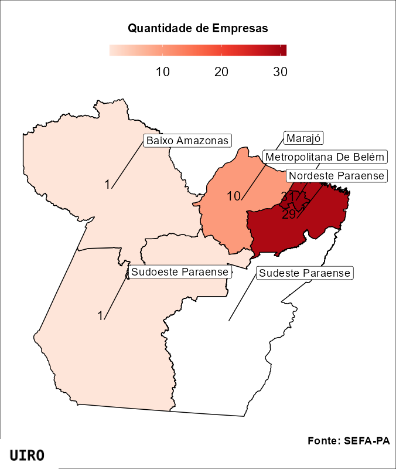

Uiro - Relatórios
1. O que a análise vai te dizer?
• Perfil setorial das empresas que recebem incentivos incentivos fiscais de ICMS do Estado do Pará
• Produtos produzidos pelas empresas.
• localização geográfica das empresas relacionadas à bioeconomia incentivadas no Estado do Pará.
2. Vocabulário
Antes de partir para análise apresentamos definições centrais para a compreensão dos resultados apresentados:
• O que são incentivos fiscais? Incentivos fiscais são políticas governamentais que oferecem benefícios tributários para promover atividades econômicas específicas com o objetivo estimular o crescimento econômico.
• O que são mesorregiões? Mesorregiões são divisões geográficas dentro de um estado, agrupando municípios com características sociais, econômicas, culturais e naturais semelhantes. Essas divisões facilitam a organização e análise de dados regionais, e são usadas e definidas pelo Instituto Brasileiro de Geografia e Estatística (IBGE) para fins estatísticos e de planejamento.
Parte 1: Um panorama geral das empresas incentivadas
190 empresas possuem Benefício de Insenção Fiscal (BIF) parcial ou total do Imposto sobre Circulação de Mercadorias e Serviços (ICMS) no Estado do Pará.
• Os dados revelam uma clara predominância das Indústrias de Transformação (IT), que representam 88,4% (168) das 190 empresas beneficiadas com incentivos fiscais de ICMS no Pará.
• O subsetores predominantes da IT tem como atividade principal a Fabricação de Produtos Alimentícios (FPA): das 168 empresas, 86 (51,19%) tem a FPA como atividade principal.
• Destas 86, 29 realizam o beneficiamento de Açaí e derivados, sendo o nicho de produtos mais númeroso em termos de quantidades de empresas.
• A produção de Óleo de Palma, Palmito e Laticínios seguem Açaí e derivados tendo, respectivamente, 14, 12 e 10 empresas envolvidas.
• As 22 empresas restantes, se distribuem entre 5 setores: - 11 (5,79%) pertencem a Agricultura, Pecuária, Produção Florestal, Pesca E Aquicultura – 6 (3,16%) Indústrias Extrativas – 3 (1,58%) Eletricidade E Gás – 2 (1,05%) Comércio; Reparação De Veículos Automotores e Motocicletas
Parte 2: Empresas com BIF relacionadas a bioeconomia
A base de dados da SEFA-PA identifica o produto principal produzido pela empresa que possui o BIF. Como uma forma exploratória de classificação, selecionamos 9 dos 67 produtos como diretamente relacionados a bioeconomia. São eles:
- Açaí e Derivados
- Palmito
- Derivados do Cacau
- Processamento de Frutas
- Pimenta do Reino
- Óleos, manteigas, Guaraná e Polpa de Açaí
- Óleo de Palma
- Fibras têxteis e Substratos
- Processamento de Frutas
37.36% (71) das 190 empresas com Benefício de Isenção Fiscal (BIF) estão relacionadas à bioeconomia.
A porção nordeste do Estado do Pará concentra a grande maioria das empresas incentivadas relacionadas à bioeconomia. Das 71 empresas, 31 estão na Mesorregião Metropolitana de Belém, 29 na meso Nordeste Paraense e 10 na meso Marajó. O Sudoeste Paraense e o Oeste Paraense concentram somente 1 empresa cada.

Abaixo realizamos uma breve descrição da quantidade de empresas por produto:
•Açaí e Derivados (31 empresas)
51.61 (16) das 31 empresas possuem certificação USDA Organic, o que lhes garante o acesso ao mercado de orgânicos dos Estados Unidos e sugere uma orientação ao direcionamento do produto ao mercado externo.
A distribuição espacial das empresas de açaí e derivados revela uma concentração significativa na Mesorregião Metropolitana de Belém, que abriga 19 empresas, representando 63,3% do total. A Mesorregião Nordeste Paraense segue com 9 empresas (30%), enquanto as mesorregiões Baixo Amazonas e Marajó possuem cada uma 1 empresa (3,33%).
• Óleo de Palma (21 empresas)
A produção de óleo de palma é dominada pela Mesorregião Nordeste Paraense, onde estão localizadas 16 empresas, representando 76,2% do total. A Mesorregião Metropolitana de Belém contém 5 empresas (23,8%). • Somente uma empresa tem Certificação da USDA Organic.
• Palmito (13 empresas) A produção de palmito é majoritariamente concentrada na Mesorregião Marajó, com 9 empresas (69,2%). A Mesorregião Metropolitana de Belém e a Mesorregião Nordeste Paraense possuem 2 empresas cada uma, ambas representando 15,4%. • Somente uma empresa tem Certificação da USDA Organic
• Derivados do Cacau (3 empresas) A maioria das empresas de derivados do cacau está localizada na Mesorregião Metropolitana de Belém, que possui 2 empresas (66,7%). A Mesorregião Sudoeste Paraense contém 1 empresa (33,3%).
• Fibras Têxteis e Substratos (2 empresas) Todas as empresas de fibras têxteis e substratos estão na Mesorregião Metropolitana de Belém, totalizando 2.
• Pimenta do Reino (1 empresa) A única empresa de pimenta do reino está localizada na Mesorregião Metropolitana de Belém. Esta empresa é especializada no comércio varejista, e não na produção ou beneficiamento do produto.
• Processamento de Frutas (1 empresa) A única empresa de processamento de frutas está na Mesorregião Nordeste Paraense no município de Tomé-Açú. Ela é a única Cooperativa incentivada e uma das empresas que possui certificação USDA Organic. Estamos falando da Cooperativa Agrícola Mista de Tomé-Açú (CAMTA).
• Óleos, Manteigas, Guaraná, Polpa de Açaí (1 empresa) A única empresa desse grupo de produtos está na Mesorregião Nordeste Paraense, no município de Abaetutuba. É a indústria que apresenta a maior diversidade de produtos e certificações orgânicas processados: 100% AMAZÔNIA EXPORTAÇÃO E REPRESENTAÇÃO LTDA. São mais de 20 produtos com diferentes níveis de beneficamento com certificado ativo na USDA Organic